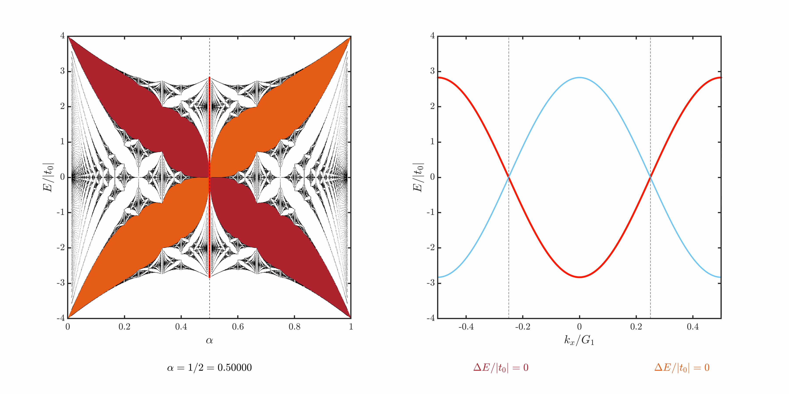

Hofstadter Butterfly
Research demonstrationFlux scans, momentum branches and energy gaps in the Hofstadter butterfly
The Hofstadter butterfly shows how the allowed energies of electrons on a square lattice vary with magnetic flux. This page places the spectrum beside its momentum-resolved branches, with three switchable parameter-scan animations for gap labels |m| = 1, 2 and 3.
Choose a gap order or a key flux below. Switching orders preserves the playback position for comparison at the same flux. Playback time is only a navigation parameter; it is not the physical time evolution of an electron.
Animation
HD release. All three orders now use the 29 October HD videos.
Press play or choose a key flux to inspect a frame.
How to read the plots
Both panels use the same model. The left panel asks: "Which energies are allowed at this flux?" The right panel asks: "How do those energies vary along the selected momentum path?".
| Plot element | Meaning |
|---|---|
| Black spectrum | The original sampled eigenvalues: 21 diagonal momentum points for large denominators and a 201 × 201 momentum grid for small denominators. Darkness does not represent the density of states. |
| Burgundy and dark orange fill | The two target gap families. Burgundy denotes the negative gap label; dark orange denotes the positive label. The colors do not indicate the sign of the energy. |
| Red points in the left panel | The energy projection of the red main rank branch in the current right panel. Different red points come from different momenta. |
| Light gray spectrum in the right panel | All eigenvalues calculated along the displayed momentum path. |
| Colored branches in the right panel | For |m| = M, branches are selected by the energy ranks of the central, −M and +M uncoupled momentum replicas. |
| Dashed lines and thick colored bars | Black dashed lines mark Bragg reference positions. Matching colored bars and end caps in the two panels mark the same global gap edges. Only independent target gaps are marked in the new HD videos. |
The full butterfly is visible from the first frame and shares its black background across all three videos. The black flux cursor and red energy projection move with the current flux.
Model and quantities
The flux ratio α is the flux through one plaquette divided by the single-electron flux quantum. In the equivalent AAH description, it is also the modulation wave number divided by the original reciprocal-lattice vector.
At rational flux p/q , the coupled momentum set closes after q steps, giving a q × q matrix at each momentum. Here, q is not the total number of sites in a finite sample.
The calculation uses a = 1,t₀ = t₁ = −1, with additional hopping terms set to t₂ = t₃ = 0. Energies in both panels are normalized by |t₀| ; horizontal momentum is normalized by G₁ = 2π/a . The right panel follows the diagonal path kᵧ = kₓ .
IEB and rank branches
These videos retain zero-coupling rank continuation: record the energy rank of a chosen bare state with coupling turned off, then select the eigenvalue at the same rank and momentum after coupling is restored. Fixed branch explanations are collected here; the video retains the changing quantities.
This is a branch-coloring rule. It neither directly tests the central momentum weight of the coupled wavefunction nor tracks a wavefunction continuously as coupling is varied. The red branch is therefore not presented as a validated wavefunction-based IEB.
Replica indices and integer gap labels are related but are not interchangeable. In the current convention, at a positive Bragg position the positive gap label +M corresponds to degeneracy with the −M bare replica, and the negative label −M to the +M replica. At rational flux, replica indices are identified modulo q, so some branches coincide.
Gaps and gap closures
The bottom-row ΔE is the global gap width: the minimum of the upper band minus the maximum of the lower band. It is not the energy jump between neighboring samples along the red branch.
Gap labels select the filling rank through r = mod(mp, q), with p/q reduced. In this nearest-neighbor square-lattice model, an independent open target of order |m| requires q > 2|m|. At q = 2|m| the central gap closes. For smaller q, the target is either absent (r = 0) or folds to a lower-order label; it is not shown as an independent high-order gap. The underlying spectrum and rank branches are retained.
| Order | Central gap closure | Lower-order folding or absence |
|---|---|---|
| |m| = 1 | α = 1/2 | No smaller denominator in the scan |
| |m| = 2 | α = 1/4, 3/4 | q = 3: lower order; q = 2: no internal gap |
| |m| = 3 | α = 1/6, 5/6 | q = 2, 4, 5: lower order; q = 3: no internal gap |

This example illustrates that a Bragg degeneracy does not guarantee an open gap. Reference dashed lines are retained at gap closures, but no finite-width gap bar is drawn.
Data and versions
The new HD videos retain the full black butterfly background, square axes, LaTeX labels and zero-coupling rank continuation. The flux value is aligned with the gap widths below the plots. The original 3600 × 1800 masters are streamed from GitHub Releases; no extra lossy web transcode is used. Earlier versions remain available below.
28 October filled-background versions: |m| = 1 · |m| = 2 · |m| = 3
Original release: 21 October 2026 MP4
Earlier uniform-background versions from the same day are also retained: Previous |m| = 1 · Previous |m| = 2 · Previous |m| = 3.
| Video validation | HD videos: 1,503 decoded frames each; 3600 × 1800; 10 fps. Earlier videos retain their original dimensions. |
|---|---|
| Sampling scope | The original 1,493 scan entries contain 1,282 distinct reduced rational fluxes with q ≤ 70; the repeated entries and original sequence are retained. The black spectrum uses nn = 21 diagonal momenta for 10 ≤ q ≤ 70 and an nn_spe = 201 two-dimensional grid for q ≤ 10; q = 10 occurs in both groups. Colored gaps use α = j/1200. This is not a direct infinite-dimensional calculation at irrational flux. |
| Background and gap markers | The static black spectrum is exported once from the original scatter points at high resolution and reused. Target gap fills exclude closed, absent and lower-order folded targets in the HD versions. Dynamic bars use the current scan flux, with matching colors and end caps in both panels. |
| Remaining limitations | The original finite momentum sampling is retained. Pixel resolution can hide very narrow gaps; neither energies nor band edges are smoothed or interpolated. The original IEB rank convention at degenerate endpoints is retained. No new Chern-number calculation was performed. |
References
- Hofstadter’s butterfly — Wikipedia — topic background and inspiration for the encyclopedia-style layout.
- From GitHub registration to static-page upload — CSDN (Chinese) — the static-page tutorial supplied by the author.
- Creating a GitHub Pages site — GitHub Docs — static website publishing instructions.